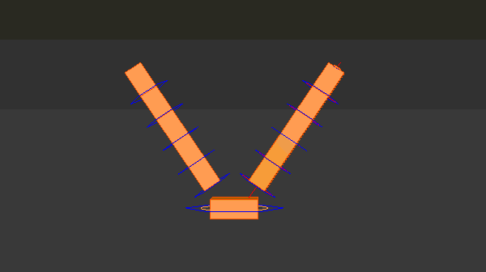
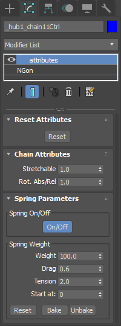
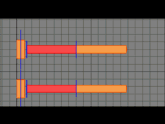
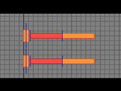
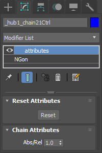

Chain¶
Controllers¶
There are two type of chain module. One is builded as FK, other one is builded with spring controllers which allow animators to create real time secondary animaions.
Spring Chain Attributes¶
These attributes can be found in the first chain controller’s modifier stack.
- Chain Attributes:
- Stretchable:
Bones stay in place or reaches to its controller depends on slider value.
stretchable:0.0 - stretchable:1.0
- Rot. Abs/Rel:
Chain orientation is affected from its parent rotation depends on slider value.
abs/rel:0.0 - abs/rel:1.0
- Spring Attributes:
- Weight:
- Multiplier of overlapping animation.
- Tension:
- If you assume it’s a guitar string, this parameter adjust tightness of string.
- Drag:
- If you assume it’s a guitar string, this parameter adjust density of air. High value means you play guitar in the water.
- Start at:
- Calculation starts from frame entered
- Bake:
- When spring button is turned on, viewport gets slower long animation ranges. To avoid this problem it bakes dynamic animation to keyframes and turns springs off.
- Unbake:
- Removes all baked keyframes.
- Reset:
- Resets spring paraeters to default values.
FK Chain Attributes¶
These attributes can be found in the first chain controller’s modifier stack.

- Abs/Rel:
Chain orientation is affected from its parent rotation depends on slider value.
abs/rel:0.0 - abs/rel:1.0